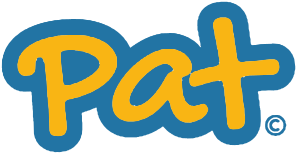

Contents
Contents2 / 1001 The idea
Most networking happens online now. That has its upsides, but it misses the moment of actually meeting someone. Pat joins the two: you meet in person, tap, and the connection lives on your phone, kept apart from your personal contacts.
The idea3 / 1002 The name
Both words are the same gesture: you tap, or pat, your card on someone's phone to make the connection. The name is the action, read either way round.
The name4 / 1003 The parrot P
Body = stem
Face = counter
Beak = bowl
The parrot P5 / 1004 Logo versions
Primary lockupThe parrot with the wordmark. Use it wherever there's room.
The markApp icon, avatar, favicon. Anywhere small.
The wordmarkHand-lettered, yellow in a blue outline. Where the parrot is already nearby.
On colourFull colour on paper and navy. On blue or yellow, use a single colour: white on blue, navy on yellow. Navy alone for one-colour print.
Logo versions6 / 1005 Clear space and misuse
Keep clear space around the logo equal to the width of the beak on every side. Don't use the mark smaller than 16px on screen or 8mm in print, and the full lockup smaller than 40px or 18mm.
Don't stretch it
Don't recolour it
Don't rotate it
Don't put full colour on blue
Clear space and misuse7 / 1006 Colour
BalanceMostly paper and blue, navy for text, yellow saved for the moment that matters: the beak, the wordmark and the tap.
Colour8 / 1007 Typography
The wordmark is drawn, not typed. Never recreate it in a font, and don't set other words in its style.
DM Sans, for everything else
Typography9 / 1008 In use
The card is the brand in one object: the lockup on paper, "Smart Networking" in DM Sans, and the navy, blue and yellow stripe down the edge.

 In use10 / 10
In use10 / 10